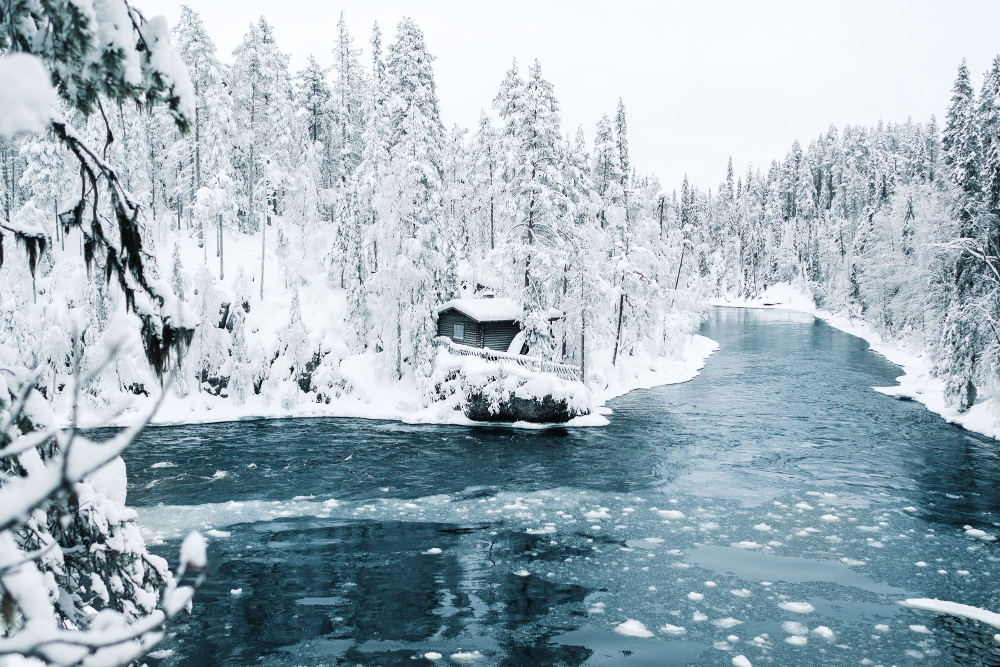
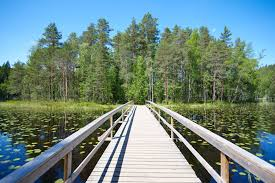
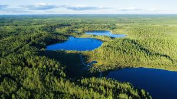
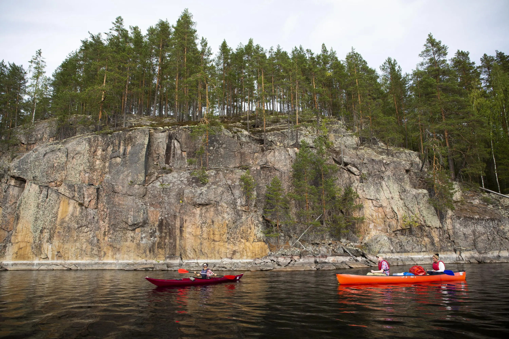
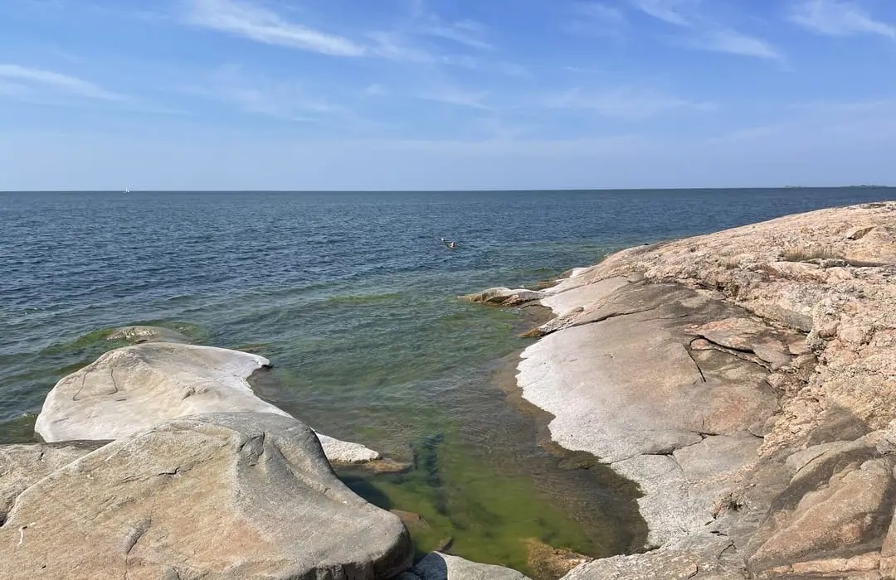
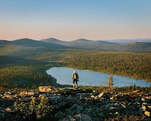
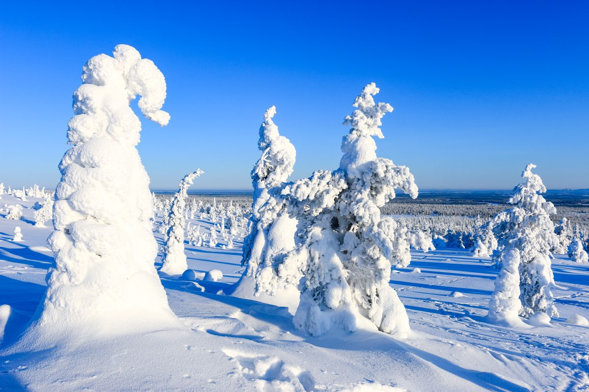
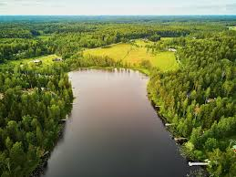
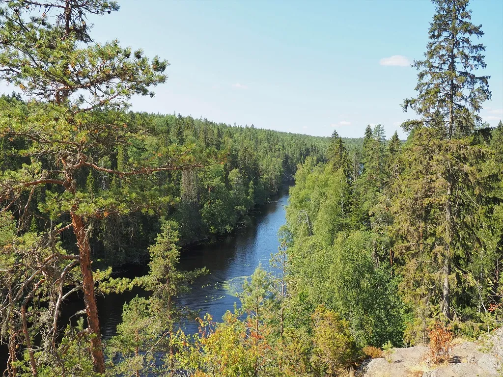

Oulanka National Park
One of Finland’s most famous parks with rivers, waterfalls, suspension bridges, and hiking routes.
Discover Finland’s most beautiful national parks with forests, lakes, mountains, and Arctic landscapes.

One of Finland’s most famous parks with rivers, waterfalls, suspension bridges, and hiking routes.

Wide fell landscapes in Lapland, famous for clean air, skiing, hiking, and northern scenery.

A peaceful forest escape near Helsinki with lakes, trails, and nature close to the capital city.

Classic Finnish forest scenery with lakes, marshland, wooden trails, and calm natural beauty.

Known for canoeing, lake cliffs, peaceful islands, and rare Saimaa ringed seals.

A coastal national park with islands, birdlife, sea views, and Finnish archipelago nature.

A huge wilderness area in Lapland with remote trails, fells, cabins, and Arctic silence.

Famous for snow-covered trees in winter and scenic hill views all year round.

A forest park near Helsinki with peaceful walking trails and easy access from the city.

Known for dramatic cliffs, deep forest lakes, and one of Finland’s most unique landscapes.